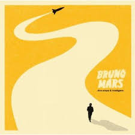
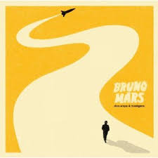
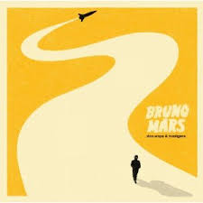

Álbuns Mais Famosos
Polemicas
BRUNO MARS
Biografia
Músicas

Cocaína
Palco patético
Treta com Prefeito do Rio de Janeiro
Comemoração anti-ética
Apropriação Cultural
Bruno Mars (1985) é um cantor, compositor e produtor musical norte-americano, autor de grandes sucessos, entre eles: “Just The Way You Are", “When I Was You Men” e “Don’t Give Up”.
Bruno Mars, nome artístico de Peter Gene Hernandez, nasceu em Honolulu, Havaí, Estados Unidos, no dia 8 de outubro de 1985. É filho do percussionista porto-riquenho, Peter Hernandez e da vocalista filipina e dançarina de hula, Bernadette Hernandez.
Infância e juventude
Desde pequeno, Peter recebeu de seu pai o apelido de "Bruno". Com 3 anos já participava das apresentações da banda da família, “The Love Notes” imitando Elvis Presley.
Com 4 anos, toda semana se apresentava em Honolulu, fazendo imitações de Elvis Presley. Com 7 anos, fez um pequeno papel como “Little Elvis” no filme Lua-de Mel, em Las Vegas.
Bruno Mars foi aluno do Roosevelt High Scool e com alguns amigos formou a banda “School Boys” e se apresentava ao lado do show de sua família. Bruno aprendeu a tocar vários instrumentos, como guitarra, baixo, piano e percussão.
Mudança para Los Angeles Em 2003, com 17 anos, depois de terminar o colegial, Bruno Mars mudou-se para Los Angeles. Em 2004, Bruno assinou contrato com a Motown Records, adotou o nome artístico “Bruno Mars” e deu continuidade à sua carreira musical.
Foi em Los Angeles que ele começou a escrever algumas canções. Junto com o compositor Philip Lawrence e com o engenheiro de som Ari Levine, formou uma produtora chamada “The Smeezington”.
Entre as produções dessa época destacam-se: “Long Distance” (2008) para a cantora de R&B, Brandy, “Right Round” (2009) para o Hip-hop Mc Flo Rida.
O artista fez diversas participações em canções de outras bandas, ou compondo, como “Get Sexy” da banda Sugababes, ou ainda cantando, como no álbum da banda Far East Movement.
Bruno teve grande destaque com sua participação na música “Nothin on You” do rapper B.O.B., e em “Billionaire” de Travie Mc Coy, quando as duas músicas conquistaram o Top 10 em vários países.
Carreira solo 2010 - 2011
Em 2010, depois de vários anos como um dos principais compositores da indústria da música pop, a carreira solo de Bruno Mars teve início com o lançamento do EP, It’s Better If You Don’t Understand.
Com as músicas: “Somewhere in Brooklin”, “The Other Side”, “Couunt On Me” e “Talking To The Moon”, o EP atingiu a nonagésima nona posição na Billboard 200, com o single “The Other Side”.
Ainda em 2010, ele lançou o single “Just The Way You Are” que chegou ao topo da Billboard Hot 100 durante quatro semanas.
Logo em seguida, Bruno Mars lançou o primeiro álbum de estúdio Doo-Wops & Hooligans. Na primeira semana de comercialização o álbum chegou ao número 3 da Billboard 200.
O álbum ficou entre os 10 mais ouvidos em vários países, entre eles, Brasil, França e Canadá. Com o grande sucesso recebeu também o Disco de Platina. Tiveram destaque também os singles “Grenade” e “The Lazy Song”. O álbum fez dele uma estrela.
Em fevereiro de 2011, Bruno Mars recebeu seu primeiro Grammy Awards na categoria “Melhor Performance Pop Vocal Masculina” com “Just The Way You Are”.
2012 - 2013 - 2014
Em dezembro de 2012, Bruno Mars lançou seu segundo álbum de estúdio, intitulado Unorthodox Jukebox. Com uma variedade de repertório, o álbum vai de canções que lembram Michael Jackson (Treasure) a baladas de estilo soul (If I Knew) e ainda resgata a atmosfera do reggae dos anos 80 (Show Me).
O primeiro single divulgado foi “Locked Out of Heaven”, que chegou ao top 5 das mais tocadas e baixada em diversos países. Alcançou a 1.ª posição da Billboard Hot 100.
Em seguida, foram lançados os singles “Young Girls”, “Moonshine” e finalmente, “When I Was Your Man” que alcançou a 1.ª posição na Billboard Hot 100. Em 22 de junho de 2013, Mars começou a turnê “Moonshine Jungle Tour.
Em 8 de setembro de 2013 foi anunciado que Bruno Mars seria a atração principal do intervalo do Super Bowl. Sua apresentação atingiu a maior audiência da história do evento.
Em dezembro de 2013, Mars foi nomeado o Artista do Ano pela Billboard e ficou em 1.º logar na lista “30 com menos de 30” da Forbes.
Em 2014, ele ganhou o Grammy Awards como o Melhor Álbum Pop Vocal com “Unorthodox Jukebox”. No mesmo ano, foi listado como o 13.º na lista das celebridades mais poderosas do mundo com ganhos estimados em 60 milhões de dólares.
2015 – 2016
Em 2015, Bruno Mars participou da composição de “All I Ask”, uma faixa do terceiro disco de estúdio de Adele 25. No ano seguinte, foi mais uma vez, uma das atrações do Super Bowl 50.
Em 2016, o single “Uptown Funk” de Bruno Mars com Mark Ronson ganhou o Grammy Awards de Best Pop Solo Collaboration e Record of the Year.
Em 2016 foi lançado o single “24K Magic” e em seguida foi lançado o álbum do mesmo nome. Nesse período, Mars apresentou-se em Las Vegas no MGM’s Park Theatre. Atingiu o segundo lugar na tabela da Billboard 200.
2017- 2018
Em 2017, Mars recebeu sete prêmios no American Music Awards 2017, entre eles o Artista do Ano. Recebeu o álbum Mixtape do Ano no Soul Train Music Awards 2017.
No Grammy Awards 2018, o cantor foi indicado para seis categorias e venceu em todas: Álbum do Ano e Melhor de R&B para 24K Magic, Gravação do Ano e Canção do Ano para 24 K Magic, Melhor Performance R&B e Melhor R&B Música para “That’s What I Like”.
2019 – 2020
Em 2019, Bruno Mars trabalhou no álbum de estúdio de Chic, It’s Abaout Time, para ser apresentada no próximo álbum de estúdio Chic. Em fevereiro, Cardi B e Mars lançaram um single juntos “Please Me”, que alcançou o Top 20 em diversos países.
Em abril de 2020, durante a quarentena da COVID 19, Mars anunciou que estava trabalhando nas composições para seu próximo álbum.
2021
Depois de um longo período sem gravar um álbum solo, no dia 26 de fevereiro de 2021, Bruno Mars e o rapper americano Anderson Paak anunciaram o lançamento da banda “Silk Sonic”. O álbum de estreia, “Na Evening With Silk Sonic” homenageia o R&B e Soul dos anos 60 e 70.
A banda, lançou o clip “Leave The Door Open” que logo chegou ao topo das paradas. Em seguida lançaram os clipes “Skate” e “Smoking Out The Window”.
O Slik Sonic foi o vencedor do BET Soul Train Awards de 2021. A dupla ganhou os três prêmios: Melhor Música, Vídeo e Composição do Ano, todos por “Leave The Door Open”.
Vida Pessoal
Em setembro de 2010, Bruno foi preso na cidade de Las Vegas, Nevada, por porte de cocaína. Foi condenado a pagar uma multa e a cumprir duzentas horas de serviço comunitário.
Bruno já namorou a dançarina Chanel Malvar, para quem dedicou a música "Just The Way You Are". Desde 2011, Bruno namora a modelo e cantora Jessica Caban.
Die With a Smile
Granade
Talking to the moon
Runaway Baby
Locked out of Heaven
After last Night
APT.
Thats what i like
DOO WHOPS & HOOLIGANS
Unorthodox Jukebox
Voltar Para Página Inicial
 
